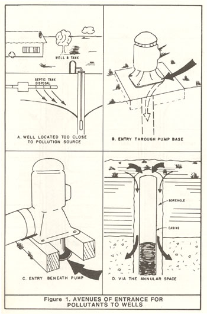
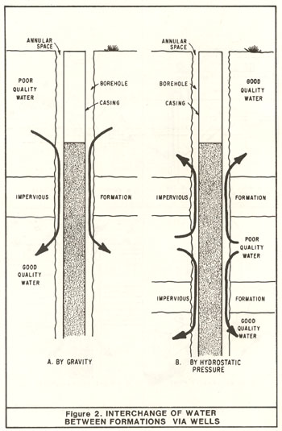

|
Wells themselves do not cause groundwater quality to deteriorate. Rather, it is inadequate construction, or, in the case of wells that no longer serve a useful purpose, their improper destruction, that can result in the deterioration of groundwater quality. Depending on the circumstances, such quality deterioration may affect the water supplying a single well, or if the pollution is substantial, a sizable segment of a groundwater basin. The impairment of water quality in an individual well, or group of wells, is the most common. Groundwater supplies have been responsible for a sizable portion of the water-borne disease outbreaks reported in the United States. Most of these outbreaks occurred where wells were so poorly constructed that they allowed contaminants to enter the well. Contaminants entering improperly constructed wells are not limited to disease organisms. There is also a growing number of case histories concerning undesirable chemicals, both toxic and nontoxic, that have gained access to groundwater and adversely affected wells a short distance away. The mechanism of water quality impairment caused by faulty wells affecting large segments of a groundwater basin is not well defined. In most instances, a number of factors have been involved; the wells have served primarily to facilitate the impairment. The most noteworthy examples in California of widespread water quality deterioration are in coastal groundwater basins that have been subjected to seawater intrusion. Inadequately constructed or improperly "abandoned" wells are not the sole cause of water quality degradation in a California groundwater basin. A small quantity of contaminants entering one well may not have far-reaching effect. However, (1) the construction of thousands of new wells in California each year, (2) the fact that many are becoming more closely spaced, and (3) the growing number of wells being neglected or indiscriminately abandoned indicate that the potential for impairing groundwater quality is growing. Then, when pollutants move along the lines of natural water movement, the effects will be long-lasting and difficult, if not impossible, to correct.  Inadequately constructed or improperly destroyed wells facilitate the impairment of groundwater quality (see Figures 1 and 2) in five principal ways: 1. When the well is located too close to sources of pollution or contamination or downstream from them so that the well can be directly affected by flow from these sources (Figure 1A). Ironically, sometimes the source of pollution is a nearby abandoned well. 2. When the surface portion of the well is constructed without protective features so that contaminated or polluted waters can flow directly into the well through one or more of several possible openings in or under the pump. Usually under these circumstances only the water in or adjacent to the well is affected (Figures 1B and 1C). 3. When the annular space (the space between the outside of the casing and the wall of the hole) lacks an adequate vertical seal and surface water or shallow subsurface water flows into the well along the outside of the casing. (Note that although the annular space may be filled with granular filter material, i.e., the familiar "gravel-pack", no seal exists and undesirable water can move downward or laterally.) This type of defective well is particularly susceptible (Figure 1D) to contamination. 4. When, during well construction (or the destruction of abandoned wells), aquifers that produce poor quality water are ineffectively sealed off, allowing the interchange of water with one or more aquifers and thus significantly impairing the quality of water in those aquifers. The well now provides a physical connection between these aquifers (Figure 2).  5. When the well is used intentionally, accidentally, or carelessly for the disposal of waste allowing direct contamination of the groundwater to occur. Such disposal is prohibited by law except under specially approved circumstances. Irrespective of the probability of occurrence and which form of deterioration takes place, wells should be constructed or destroyed such that they do not contribute to the impairment of the quality of California's groundwater supplies. Moreover, while the well construction industry, advisory groups, and regulatory agencies want to protect the quality of the State's groundwater supplies as well as assure that wells are adequately constructed, there is no broad, uniform approach for so doing in California. The resolution of this problem requires the development of standards for water well construction and destruction that will ensure the protection of the State's groundwater as they exist in the ground or as they pass through the well for use. Such standards should be capable of execution by the average competent well driller using commercially available equipment and materials, without imposing undue financial burden on the well owner. Well standards do more than protect the quality of the groundwater resource; they also provide a degree of consumer protection. When standards are established and implemented in an area, well owners have more assurance that their wells will be constructed properly. Proper construction could mean less maintenance with an extended well life. Most well owners do not realize that deficiencies in design and construction (including failure to close-off access to pollutants described above) are likely to result in higher operating and maintenance costs. A subject touched upon earlier is the safety hazard posed by the unused or "abandoned" well. While safety is not a matter involving the maintenance of groundwater quality, it should be a concern to all those involved with water wells. Any abandoned excavation is a threat to the safety of people, especially children and animals. Further, State law (Section 24400 of the California Health and Safety Code) requires that abandoned excavations be fenced, covered, or filled. Yet, children (and sometimes adults) and livestock do fall into abandoned wells and other excavations. By properly destroying abandoned wells, we can easily eliminate this safety hazard. |
| Previous Section Table of Contents Next Section |